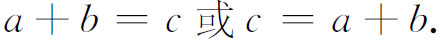
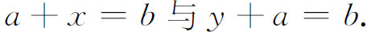
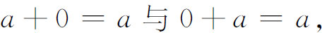
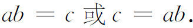
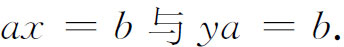
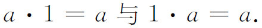
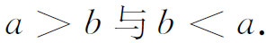
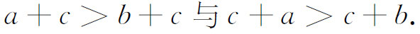
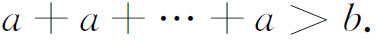

5．实数系的其他处理
以上所描述的关于处理实数系逻辑基础的要点是：先得出整数及其有关性质，从而导出负数与分数，最后导出无理数。这种处理的逻辑基础只是关于自然数的某些公设的系列，例如皮亚诺公理。所有其他的数都是构造出来的。希尔伯特称以上的处理为原生法（genetic method）（他可能当时还不知道皮亚诺公理，但他知道关于自然数的其他处理）。他承认这种原生法可能有教学与直观推断的价值，但他说，对整个实数系采用公理方法，在逻辑上将更为可靠。在我们陈述他的理由之前，我们先看一看他的公理(18)。
他介绍了不定义的词和用a，b，c代表的数之后，给出了下列公理：
Ⅰ．连接公理
Ⅰ1 从数a与数b经过加法产生一个确定的数c；用符号表示出便是

Ⅰ2 若a与b是给定的两数，则存在唯一的一个数x与唯一的一个数y，使

Ⅰ3 存在一个确定的数，记为0，使对每一个a都有

Ⅰ4 从数a与数b经过另一方法——乘法，产生一个确定的数c，用符号表示出便是

Ⅰ5 若a与b是任意给定的两数，且a不是0，则存在唯一的一个数x与唯一的一个数y，使

Ⅰ6 存在一个确定的数，记为1，使对每一个a都有

Ⅱ．运算公理
Ⅱ1 a＋（b＋c）＝（a＋b）＋c．
Ⅱ2 a＋b＝b＋a．
Ⅱ3 a（bc）＝（ab）c．
Ⅱ4 a（b＋c）＝ab＋ac．
Ⅱ5 （a＋b）c＝ac＋bc．
Ⅱ6 ab＝ba．
Ⅲ．顺序公理
Ⅲ1 若a与b是任意两个不同的数，则其中的一个必大于另一个，称后者为小于前者；用符号表示出便是

Ⅲ2 若a＞b与b＞c，则a＞c．
Ⅲ3 若a＞b，则下述关系成立：

Ⅲ4 若a＞b，c＞0，则ac＞bc与ca＞cb．
Ⅳ．连续公理
Ⅳ1 ［阿基米德公理］若a＞0与b＞0是两个任意的数，则总可以把a自己相加足够的次数使

Ⅳ2 ［完备公理］对于数系，不可能加入任何集合的东西使加入后的集合满足前述公理。扼要地说，数构成一个对象系，它在保持上述公理全部成立的情况下不能扩大。
希尔伯特指出，这些公理并不是互相独立的，有些可以从另一些导出来。他接着肯定，在上述的实数概念下，那些反对无限集合存在的论点是站不住的。他说，这是因为我们无需去总体地考虑所有那些可以用来构成基本序列（康托尔的有理数序列）中元素的定律全体，我们只需考虑一个封闭的公理系统以及那些可以通过有限个逻辑步骤导出来的结论。他确实也指出，这组公理的相容性是必须证明的，但只要这一点做到之后，由此定义出来的对象，即实数，就在数学的意义下存在了。希尔伯特那时还没有觉察到，实数公理的相容性是很难证明的。
希尔伯特声称，他的公理方法优越于原生法。对此，罗素的回答是，前者有窃取辛勤劳动成果的优越性，它一下子就假定了那些能从小得多的一组公理推演出来的东西。
在数学上几乎每一次重大的进展都会遭到反对，实数理论的创建也不例外。我们已经提到过，杜波依斯-雷蒙是反对分析算术化的，在他的1887年的《函数的一般理论》（Théorie générale des fonctions）一书中说道(19)：
毫无疑问，借助于所谓的公理、公约、生造的哲学命题以及本来清楚的概念的不可理解的推广，一个算术体系是可以建立起来的。它在各方面都类似于从度量概念得出的体系，却好像是用教条与防御性定义作为警戒线来孤立计算的数学……但是任何人都可以照样发明另外一套算术体系。通常的算术正好是这样一个体系，它是对应于线性度量的。
尽管有这样的攻击，在广大的数学家们看来，实数系工作的完成，解决了它所面对的所有逻辑问题。算术、代数与分析至今仍是数学的最广阔的部分，而这部分现在已经有了稳固的基础。